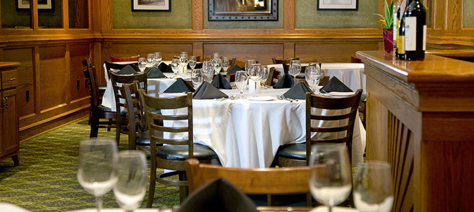

PRIVATE DINING
Chatham House offers guests a private dining area for larger dinners, corporate meetings or community events. Guests can order from the signature Chatham House menu or guests can create their own private dining menu to fit any special occasion.
The private dining room accommodates seating for 50 guests and from 50 to 70 guests for a reception. There is a private bar in the room to serve guests.
For private parties or group reservations please contact Stephen Clark, executive chef and director of operations, at chefstephenclark@yahoo.com or call (954) 825-6201